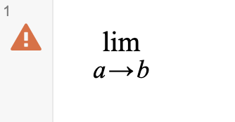

Use LaTeXmos to turn LaTeX that is normally unaccepted by Desmos into LaTeX that can be copy-pasted straight into Desmos. Type your desired LaTeX into the top box, select your options, and then press run! Now you can either copy paste the LaTeX from the bottom box into one of your graphs or copy the expression line from the side that should have appeared.
LaTeXmos supports limit notation. Simply include in any of your lines "\lim_{a \to b}" in order for a limit to be displayed.
LaTeXmos supports matrices. Type "\begin{matrix} item1 & item2 & item3 ... itemn \\ column2item1 & column2item2 ... \end{matrix}" in one of your lines to crete a matrix. Note that you cannot split matrices across multiple lines, because the parser will interpret that as multiple lines.
LaTeXmos' settings include single expression multiline which places all of your input lines into a single expression in Desmos. There is also left align which left aligns the expressions (they are center aligned by default) in a single expression multiline. This setting does nothing if single expression multiline is turned off. For inputs with a large number of lines, it is reccomended not to turn on left align, as it can cause a decent amount of lag.